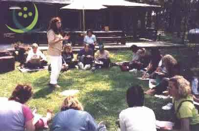

"Terapia de Conciencia Expandida"
una terapia del alma
Primer encuentro de conciencia expandida realizado el 6 de octubre de 2002 en Escobar
A pedido de varios pacientes se realizó una salida con el objetivo de intercambiar experiencias, aprovechar la energía del grupo para expandir nuestras conciencias y ayudarnos mutuamente en los procesos personales de sanación. El encuentro fue muy positivo, y todos quedamos con ganas de hacer otro próximamente.
Tal como lo habían transmitido varios pacientes durante sus sesiones el día fue muy agradable a pesar que el servicio meteorológico pronosticaba lo contrario, todo estuvo para que dicho evento se realizara con éxito.
Transcribiré algunas reflexiones de los participantes del Encuentro:
Comenzar a andar un camino, sabiendo que solo es eso, andar y en este andar me ha invadido el amor. He podido perdonarme y pedido a otros su perdón, me he descubierto parte del tiempo atemporal. Me he sentido parte de cada partícula del aire, del mar, de la tierra, del sol y del cielo y es solo comenzando a andar, a recordar.
Celia
Top 
Autoconocimiento a través del primer ejercicio, contacto con la tierra y con la naturaleza, compartir códigos, sanación, perdón, equilibrio, escuchar y recibir experiencias comprensión acerca de mi propia misión, de cómo trabajar, ayudar, sanar a otros simplemente "siendo" y dejando que la luz se exprese. De esta manera se trabaja en grupo para lograr una conciencia mas vasta, comunitaria.
María Silvina
Top
Me llevo la certeza de poder terminar lo que vine a buscar: la grandeza del perdón. Fue un día de permanente emoción que a duras penas logré contener. Me sentía muy pequeña de espíritu y me voy agrandada de luz interior que creo me va a permitir ser mejor y feliz.
Silvia Graciela
Top
Gracias. Hoy fue unir el cielo con la tierra, el amor con el amor, la alegría de la naturaleza con la alegría del ser. Es como sentir a D'os jugando entre los árboles. Gracias, gracias, gracias padre por este día, por permitirnos sentir esta sensación tan elevadora. Gracias Viviana por haber aceptado esta idea y llevarla a la práctica.
Bety
Top
Se sintió la presencia de Díos todo el tiempo. Ahora mismo es muy fuerte. Estoy llena de paz y armonía, no alcanzan las palabras para describir lo que está sucediendo en este mismo momento. Gracias por este gran día.
Norma
Top
Hoy cerca de Díos, cerca del maestro, el sol alumbrando nuestras vidas mi corazón ha sentido como nunca que la fe, la esperanza, el amor es lo que hace que el mundo donde vivimos y en el cual habitamos sea tan hermoso y nuestro amor por nuestros hermanos sea la bandera bendita para estar siempre unidos.
Irma María
Top
Me es muy difícil poner todo en una hoja, sería más fácil hacerlo verbalmente. Mi emoción comenzó antes de llegar a este hermoso lugar, estando con gente que no conocía y decidiendo compartir un día con ellos, no tenia dudas que todo iba a estar bien, tampoco necesitaba corroborarlo, pero sí sentirlo y así fue, el contacto con la naturaleza y la fusión con nuestras energías fueron factores importantes. Me sentí en todo momento contenida y acompañada y pasé por momentos de verdadera emoción al sentir la expansión de mi conciencia y llegar a lugares y situaciones llenas de luz, lo que me produjo paz, amor, tranquilidad y mucha confianza que para mí es muy importante. La comunicación de Silvina con el maestro me impacto al compartirlo con todos nosotros y dejándonos su mensaje de amor. En síntesis me voy plena. Gracias.
Graciela Nora
Top
Hoy me llevo un día lleno de gratos recuerdos, energía, un mensaje de quietud pues a veces no puedo poner límites, esta posibilidad de frenar y de tomar distancia para pensar me llena de interrogantes que de a poco voy contestándome. Mi alma necesita reparase después de muchos sufrimientos, pero ellos sirvieron para hacerme discernir lo que PUEDO y lo que NO PUEDO y que puedo confiar en D'os ya que él me acompañó, me acompaña y acompañará en este camino de sanación. Agradezco a la licenciada Viviana a ayudarme a transitar este camino y a reconocer mi lugar en este TIEMPO y ESPACIO. Siempre con el amor como maestro de las acciones.
Susana
Top
Estoy emocionada por todo, esto tenía que suceder. Creía que estaba tan sola y estoy tan acompañada. Mi guía, D'os y vos (Viviana) Gracias por todo, celebro y festejo el encuentro con mi hermano, pero también celebro mi encuentro con D'os y mi guía y con todos Uds. Por primera vez celebro la vida que no es poca cosa.
Viviana M.
Top
Amor, Paz, Bienestar, luz en mi alma, solidaridad. Esta experiencia me ha dejado una profunda emoción como no había sentido antes. Fue un rencuentro con las emociones, con migo misma pero desde otro lugar jamás antes transitado, siento que es la puerta de acceso a una mejor calidad de vida para mí y para quienes me rodean. Estoy muy emocionada por el mensaje del maestro. No me alcanzan las palabras para reflejar y transmitir esto que siento.
Silvia A.
Top
Me siento muy bien de verdad. Me llevo muchas cosas lindas y principalmente mucha paz interior.
Isabel
Top
En este día me llevo: Más comprobaciones, amor, paz, pertenencia, agradecimiento. Comprobar que mi hijo está más interesado en la espiritualidad de lo que yo creía (que no era poco).
Liliana
Top
Me llevo la palabra de el maestro que los niños son la esperanza del futuro y que tengo que prepararme para cambiar el entorno.
Un beso David (10 años)
Top
Una experiencia fuera de lo común que da una paz y una tranquilidad del cuerpo y alma. Muy buen grupo, felicidades.
Alberto
Top
Fue algo maravilloso, es un sueño encontrar lo que tanto busqué, busco y seguiré buscando pero ahora mucho más tranquila y con mucha más luz y paz que antes. Gracias a D'os por darme esta oportunidad de encontrar la paz y encontrarme con migo misma. Siempre amé a D'os y supe que todo iba a llegar ya que El nunca me defraudó, ahora más que nunca quiero ayudar a los demás a ver y sentir como yo a D'os con los ojos del alma. Y le agradezco al ser que hoy perdoné porque tanto sufrimiento tuvo el mejor regalo. Ojalá pueda transmitir la paz y la luz que tuve yo cuando por fin encontré a Viviana que me entendió y como dice el maestro si puedes creer todo es posible para el que cree. Gracias a D'os y a Vivi.
Eva M.
Top
Después de cuatro meses de gran tortura por la salud, hoy 6 del 10 veo nuevamente la luz que se me había apagado por mi enfermedad. Hoy un día de campo me sirvió para tomar conciencia de lo que es la terapia de conciencia expandida e invito a otra gente a que practique esta terapia. Agradezco a Viviana por esta oportunidad.
Bernarda
Top
Seguime en Facebook

Tapping


Bajar Player.